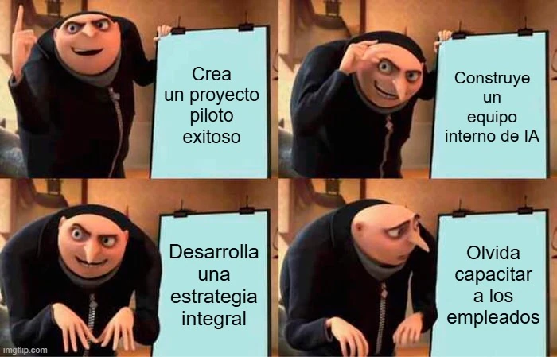

estrategIA #64 ·
El paso que faltaba en el plan
El contexto
La guía de iniciación a la IA para instituciones tenía un componente organizativo. El plan de Gru avanza por pilotos, equipos y estrategia, hasta tropezar con una omisión muy concreta: formar a las personas que deben aplicar y sostener los cambios.
Publicado en: estrategIA #64 - De la teoría a la práctica: guía esencial de IA para instituciones y gobiernos que se preguntan ¿por dónde empiezo?
Leer el texto de la imagen
Crea un proyecto piloto exitoso Construye un equipo interno de IA Desarrolla una estrategia integral Olvida capacitar a los empleados
Marca de la herramienta visible en el original: imgflip.com.